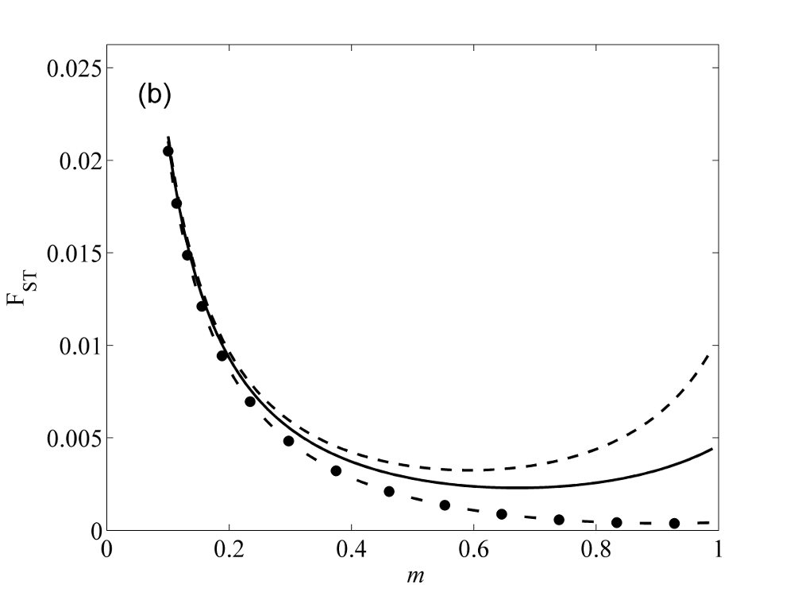

In marine biology evidence of collective dispersal (the correlated movement of two or more individuals) is becoming increasingly common. It is even relevant in coastal systems where it may be expected that strong currents would disperse groups of individual.

We are developing theory and computer simulations that build upon the propagule pool model to describe the population genetic consequences of collective dispersal. This is important if genetic data on marine organisms is to be correctly interpretted. We know that collective dispersal tends to promote population differentiation (FST).
 Our theory makes quantitative predictions on this and other genetic statistics. The graph shows predictions of FST as a function of immigration probability (m) for three different strengths of collective dispersal. Notice that on the right-hand side of the figure, increasing immigration can increase differentiation under collective dispersal.